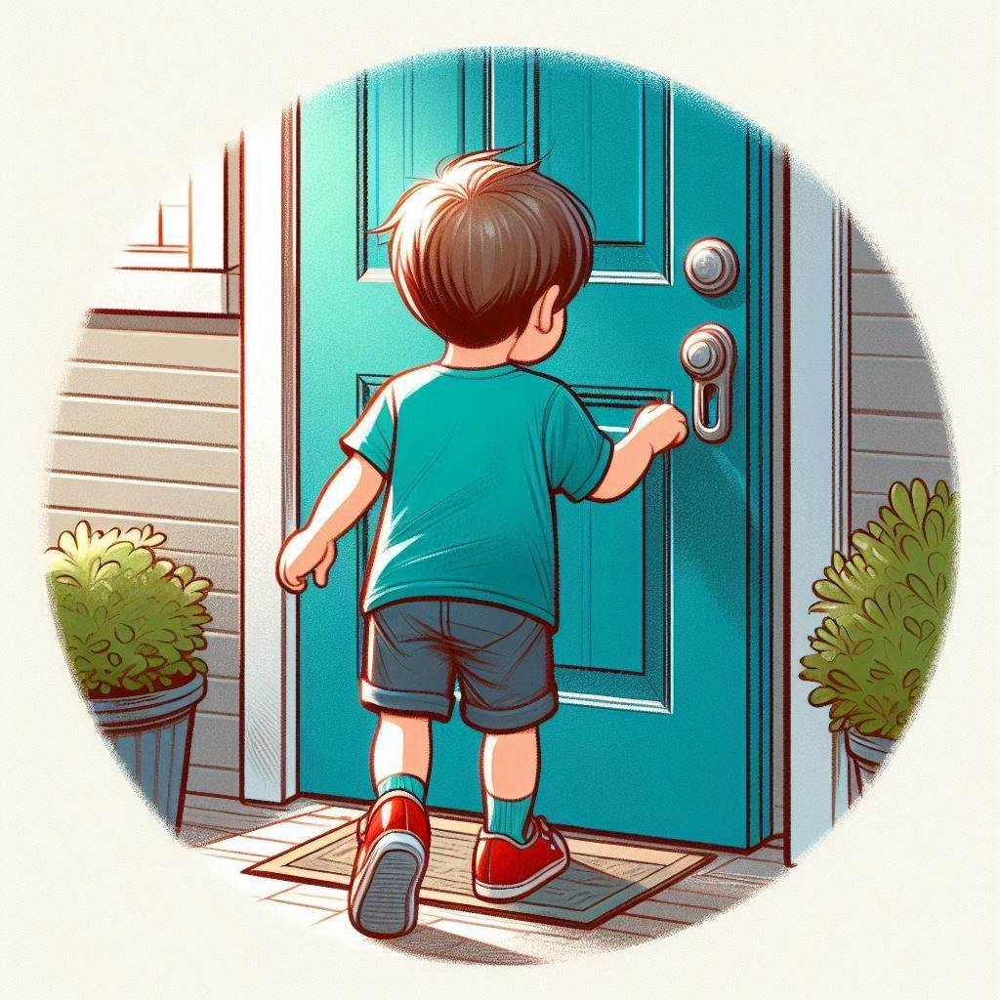
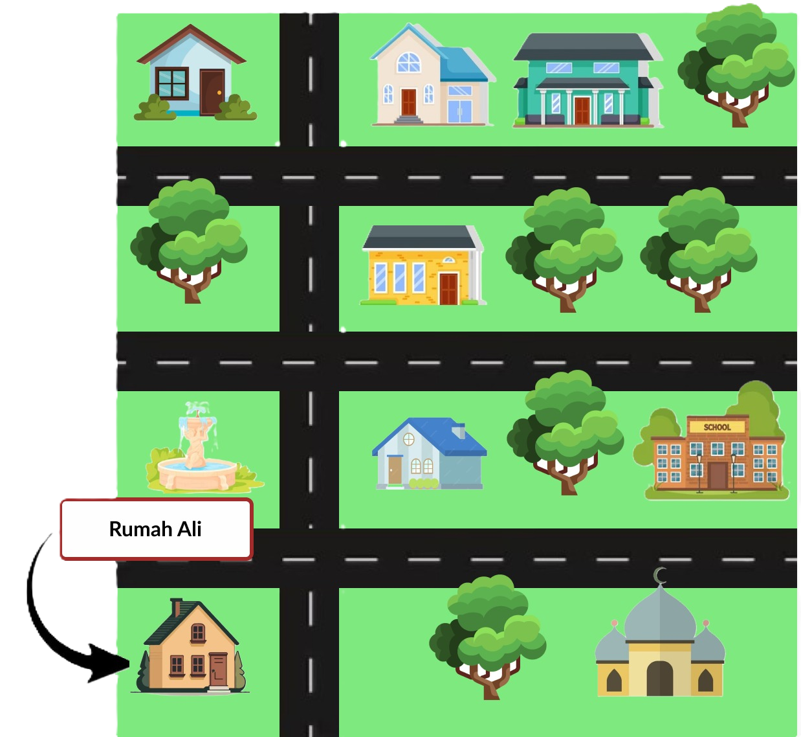
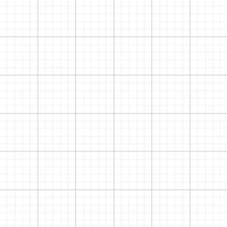

A
Jenis transformasi
Translasi / Pergeseran
Geser,
memindahkan sesuatu dari satu tempat ke tempat lain
memindahkan sesuatu dari satu tempat ke tempat lain

Hi, ketemu lagi sama Ali.
Saat ini Ali mau berjalan ke rumah nenek.

Saat ke rumah nenek, Ali berjalan ke arah utara/atas melewati 2 rumah, lalu ke arah
timur/kanan melewati 1 rumah lagi.
Yang manakah rumah nenek?
A

Klik untuk melihat
B
Klik untuk melihat
C
Klik untuk melihat

Berapakah jarak yang di tempuh Ali ke rumah neneknya?
A
2 rumah ke arah utara,
1 rumah ke arah timur
B
1 rumah ke arah utara,
2 rumah ke arah timur

Peristiwa di atas merupakan contoh translasi loh!

Jadi, Apa itu Translasi?

Translasi adalah proses memindahkan semua titik pada bangun datar dengan jarak dan arah yang sama.

Coba kamu tebak berapa jarak dan arah translasi titik A di bawah!
Klik untuk melihat

A
A'
A
2 satuan ke kanan
B
3 satuan ke kiri
C
3 satuan ke kanan
Benar, jadi setiap kotak dihitung 1 satuan.
Bagaimana dengan jarak dan arah translasi titik B di bawah?
Klik untuk melihat

A
A'
A
2 satuan ke kiri dan
1 satuan ke atas
1 satuan ke atas
B
1 satuan ke kiri dan
2 satuan ke atas
2 satuan ke atas

Jadi, titik B ditranslasi sejauh 2 satuan ke kiri dan 1 satuan ke atas atau
Jika kamu bingung? Cobalah konten di bawah!
Masukkan nilai positif
maupun negatif lalu tekan tombol TRANSLASI dan amatilah perpindahan titk B
maupun negatif lalu tekan tombol TRANSLASI dan amatilah perpindahan titk B
Jarak dan Arah:
Saatnya mengetes pemahaman kamu terkait jarak dan arah translasi!

Tes Pemahaman
TES PERTAMA
Titik A ditranslasikan sejauh
. Tentukan jarak dan arah yang dimaksud!
1 satuan kearah kiri
4 satuan kearah atas
4 satuan kearah kanan
1 satuan kearah bawah
4 satuan kearah kiri
1 satuan kearah atas
1 satuan kearah kanan
4 satuan kearah bawah
TES KEDUA
Terdapat titik A ( -3 , -2 ). Jika titik A ditranslasikan sejauh
. Tentukan kordinat titik A'
Klik pada kordinat untuk memunculkan titik lalu cek jawabanmu pada tombol "Check"
Bangun datar pasti memiliki beberapa titik sudut kan, seperti di segitiga.
Segitiga dibawah memiliki titik sudut A, B, dan C.
Klik untuk melihat

Ayo kita bahas translasi pada bangun datar.
Ali tampilin lagi yah definisi translasi!
Translasi adalah proses memindahkan semua titik pada bangun datar dengan jarak dan arah yang sama.

Menurutmu, apakah semua titik sudut
persegi ABCD mengalami pergeseran dengan
jarak dan arah yang sama?
Klik untuk melihat
A
Jarak dan arahnya sama
B
Jarak dan arahnya berbeda
Karena jarak dan arah pergeserannya berbeda maka
persegi ABCD tidak mengalami translasi
Apakah persegi EFGH mengalami translasi?
Klik untuk melihat
A
Translasi
B
Bukan Translasi
Dibawah ini kamu bisa lihat contoh translasi bangun datar di kordinat kartesius dan
tes pemahaman!


Segitiga ABC dengan kordinat A ( -4 , 1 ), B ( -3 , -2 ), dan C ( -1 , 1 ) yang akan ditranslasikan sejauh
A
B
C
B'
A'
C'
Diketahui:
Jarak dan arah translasinya adalah 4 satuan kearah kanan dan 1 satuan kearah atas
Diperoleh:
Segitiga A'B'C' dengan kordinat A' ( 0 , 2 ), B' ( 1 , -1 ), C' ( 3 , 2 )
Tes Pemahaman
TES KETIGA
Terdapat segitiga ABC. Jika segitiga ABC ditranslasikan sejauh
, tentukan kordinat segitiga A'B'C'
A
B
C
Pindahkan titik-titik sudut segitiga hijau hingga membentuk kordinat segitiga A'B'C'
Berakhir sudah pembahasan kita di translasi
Selanjutnya kita akan membahas jenis transformasi refleksi